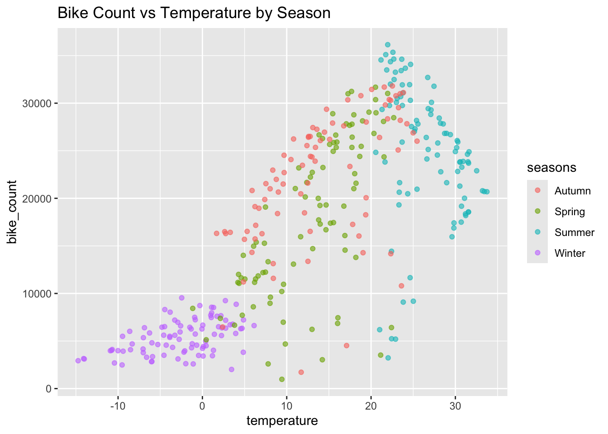
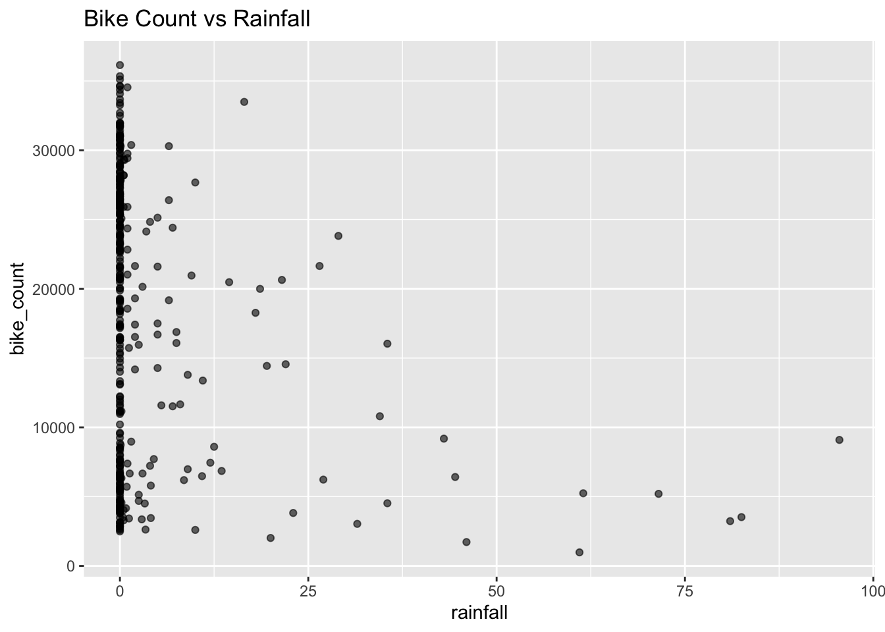

HW8 – Basic Modeling Practice (Seoul Bike Sharing)
Overview
This analysis builds several linear regression models to predict daily bike rentals in Seoul from weather and seasonal factors. I (1) clean and aggregate the hourly data to the day level, (2) create a weekend/weekday indicator, (3) compare three modeling “recipes” via 10-fold cross-validation, and (4) evaluate the best model on a held-out test set. I prioritize RMSE as the selection metric because it measures average prediction error on the outcome’s natural scale (bike count).
library(tidyverse)
── Attaching core tidyverse packages ──────────────────────── tidyverse 2.0.0 ──
✔ dplyr 1.1.4 ✔ readr 2.1.5
✔ forcats 1.0.0 ✔ stringr 1.5.1
✔ ggplot2 4.0.0 ✔ tibble 3.2.1
✔ lubridate 1.9.2 ✔ tidyr 1.3.1
✔ purrr 1.2.0
── Conflicts ────────────────────────────────────────── tidyverse_conflicts() ──
✖ dplyr::filter() masks stats::filter()
✖ dplyr::lag() masks stats::lag()
ℹ Use the conflicted package (<http://conflicted.r-lib.org/>) to force all conflicts to become errors
library(lubridate)library(janitor)
Attaching package: 'janitor'
The following objects are masked from 'package:stats':
chisq.test, fisher.test
# read in the dataurl <-"https://www4.stat.ncsu.edu/~online/datasets/SeoulBikeData.csv"bikes_raw <- readr::read_csv(url, show_col_types =FALSE)
EDA
Data and initial checks
I load the provided Seoul Bike Sharing dataset and convert key variables to appropriate types. I then examine missingness and factor levels to confirm they match expectations.
Key notes from cleaning:
date is parsed to Date; seasons, holiday, and functioning_day are factors.
The assignment hints that Functioning Day has a single dominant level; I restrict the analysis to functioning days and then aggregate hourly rows to daily by summing bike counts, rainfall, and snowfall, and averaging the other weather variables. This yields one record per day suitable for daily-level modeling.
date seasons holiday bike_count
Min. :2017-12-01 Autumn:81 Holiday : 17 Min. : 977
1st Qu.:2018-02-27 Spring:90 No Holiday:336 1st Qu.: 6967
Median :2018-05-28 Summer:92 Median :18563
Mean :2018-05-28 Winter:90 Mean :17485
3rd Qu.:2018-08-24 3rd Qu.:26285
Max. :2018-11-30 Max. :36149
rainfall snowfall temperature humidity
Min. : 0.000 Min. : 0.000 Min. :-14.738 Min. :22.25
1st Qu.: 0.000 1st Qu.: 0.000 1st Qu.: 3.304 1st Qu.:47.58
Median : 0.000 Median : 0.000 Median : 13.738 Median :57.17
Mean : 3.576 Mean : 1.863 Mean : 12.776 Mean :58.17
3rd Qu.: 0.500 3rd Qu.: 0.000 3rd Qu.: 22.592 3rd Qu.:67.71
Max. :95.500 Max. :78.700 Max. : 33.742 Max. :95.88
windspeed visibility dew_point solar_rad
Min. :0.6625 Min. : 214.3 Min. :-27.750 Min. :0.02917
1st Qu.:1.3042 1st Qu.:1087.0 1st Qu.: -5.188 1st Qu.:0.28333
Median :1.6583 Median :1557.8 Median : 4.612 Median :0.56500
Mean :1.7261 Mean :1434.0 Mean : 3.954 Mean :0.56773
3rd Qu.:1.9542 3rd Qu.:1874.3 3rd Qu.: 14.921 3rd Qu.:0.82000
Max. :4.0000 Max. :2000.0 Max. : 25.038 Max. :1.21667
# A couple of quick plots (optional, expand as you like)ggplot(daily, aes(temperature, bike_count, color = seasons)) +geom_point(alpha =0.6) +labs(title ="Bike Count vs Temperature by Season")

ggplot(daily, aes(rainfall, bike_count)) +geom_point(alpha =0.6) +labs(title ="Bike Count vs Rainfall")

Train/test split and resampling
To evaluate out-of-sample performance, I create a 75/25 train–test split of the daily dataset. I stratify by seasons so the proportion of seasons is similar in both sets. I fix the seed for reproducibility. On the training data, I set up 10-fold cross-validation (also stratified by season) to compare model variants fairly while using most of the data for fitting on each fold. This gives stable RMSE estimates and reduces variance from any single split.
I add a day_type indicator (Weekend vs Weekday) using the calendar date to capture systematic demand differences by day of week.
Modeling strategy
I compare three linear-model “recipes” that share the same base predictors (season, holiday, day_type, and daily weather features):
Recipe 1 (Baseline): Dummy-code categoricals and standardize numeric predictors.
Recipe 2 (Interactions): Baseline + interactions to capture heterogeneous seasonal effects and the joint effect of temperature with rainfall.
Recipe 3 (Quadratic): Recipe 2 + quadratic terms for numeric predictors with enough unique values (to avoid overfitting/degenerate polynomials).
Using ordinary least squares lets me interpret coefficients while keeping the pipeline simple and fast to cross-validate.
# 1) Add day_type to the split datatrain <- train %>%mutate(day_type =factor(if_else(wday(date, week_start =1) >=6, "Weekend", "Weekday")))test <- test %>%mutate(day_type =factor(if_else(wday(date, week_start =1) >=6, "Weekend", "Weekday")))# Safety checkstopifnot("day_type"%in%names(train))# 2) Recreate folds AFTER day_type exists in trainset.seed(2025)folds <-vfold_cv(train, v =10, strata = seasons)# 3) Base formula used by all recipesbase_formula <- bike_count ~ seasons + holiday + day_type + temperature + humidity + windspeed + visibility + dew_point + solar_rad + rainfall + snowfall# 4) Recipes (build them now, with train that already has day_type)# Recipe 1: baseline (dummy + scale)rec1 <-recipe(base_formula, data = train) %>%step_zv(all_predictors()) %>%step_dummy(all_nominal_predictors()) %>%step_normalize(all_numeric_predictors())# Recipe 2: + interactions# NOTE: use starts_with("holiday_") because holiday is dummy-codedrec2 <-recipe(base_formula, data = train) %>%step_zv(all_predictors()) %>%step_dummy(all_nominal_predictors()) %>%step_interact(~starts_with("seasons_"):starts_with("holiday_")+starts_with("seasons_"):temperature+ temperature:rainfall) %>%step_lincomb(all_predictors()) %>%step_corr(all_numeric_predictors(), threshold =0.999) %>%step_normalize(all_numeric_predictors())# Compute which numeric predictors have >= 3 unique values (in TRAIN)num_ok <- train %>% dplyr::select(where(is.numeric), -bike_count) %>% purrr::keep(~ dplyr::n_distinct(.x) >=3) %>%names()# Recipe 3: interactions + quadratic terms only for "ok" numericsrec3 <-recipe(base_formula, data = train) %>%step_zv(all_predictors()) %>%step_dummy(all_nominal_predictors()) %>%step_interact(~starts_with("seasons_"):starts_with("holiday_")+starts_with("seasons_"):temperature+ temperature:rainfall) %>%step_poly(any_of(num_ok), degree =2) %>%step_lincomb(all_predictors()) %>%step_corr(all_numeric_predictors(), threshold =0.999) %>%step_normalize(all_numeric_predictors())
Model specification and workflows
For modeling, I use a linear regression specification implemented with the "lm" engine in tidymodels.
I then create three separate workflows, each combining the same model type with a different data-preprocessing recipe defined earlier.
Workflow 1 (wf1) uses the baseline recipe with standardized numeric features and dummy-coded categoricals.
Workflow 2 (wf2) uses the recipe that adds selected interaction terms to capture relationships such as season × temperature and temperature × rainfall.
Workflow 3 (wf3) combines the interaction recipe with quadratic (squared) numeric terms to allow mild non-linearity.
Using workflows ensures that each recipe’s preprocessing steps are automatically applied during both training and evaluation, keeping the modeling process reproducible and consistent across all three variants.
I evaluate each recipe with 10-fold CV and select the model with the lowest mean RMSE.
# 10-fold CV on trainingset.seed(2025)res1 <-fit_resamples(wf1, folds, metrics =metric_set(rmse, rsq), control =control_resamples(save_pred =TRUE))res2 <-fit_resamples(wf2, folds, metrics =metric_set(rmse, rsq), control =control_resamples(save_pred =TRUE))res3 <-fit_resamples(wf3, folds, metrics =metric_set(rmse, rsq), control =control_resamples(save_pred =TRUE))collect_metrics(res1)
# A tibble: 2 × 6
.metric .estimator mean n std_err .config
<chr> <chr> <dbl> <int> <dbl> <chr>
1 rmse standard 4121. 10 188. pre0_mod0_post0
2 rsq standard 0.829 10 0.0154 pre0_mod0_post0
collect_metrics(res2)
# A tibble: 2 × 6
.metric .estimator mean n std_err .config
<chr> <chr> <dbl> <int> <dbl> <chr>
1 rmse standard 3035. 10 226. pre0_mod0_post0
2 rsq standard 0.906 10 0.0129 pre0_mod0_post0
collect_metrics(res3)
# A tibble: 2 × 6
.metric .estimator mean n std_err .config
<chr> <chr> <dbl> <int> <dbl> <chr>
1 rmse standard 2820. 10 244. pre0_mod0_post0
2 rsq standard 0.917 10 0.0147 pre0_mod0_post0
# Compare mean RMSE across the three and pick bestrmse_summary <-bind_rows(collect_metrics(res1) %>%filter(.metric =="rmse") %>%mutate(model ="rec1"),collect_metrics(res2) %>%filter(.metric =="rmse") %>%mutate(model ="rec2"),collect_metrics(res3) %>%filter(.metric =="rmse") %>%mutate(model ="rec3")) %>%arrange(mean)rmse_summary
# A tibble: 3 × 7
.metric .estimator mean n std_err .config model
<chr> <chr> <dbl> <int> <dbl> <chr> <chr>
1 rmse standard 2820. 10 244. pre0_mod0_post0 rec3
2 rmse standard 3035. 10 226. pre0_mod0_post0 rec2
3 rmse standard 4121. 10 188. pre0_mod0_post0 rec1
After identifying the best-performing workflow from cross-validation, I refit that model on the entire training set and then evaluate it on the held-out 25% test set using last_fit().
Because the test data must include all predictors used in the model, I first confirm that the day_type feature (Weekend vs. Weekday) is present in the full dataset before recreating the stratified train/test split.
last_fit() automatically refits the chosen workflow (best_wf) on the training portion of split2 and computes performance metrics on the test portion.
The resulting output reports the test RMSE and R², which summarize how well the selected model generalizes to unseen data.
A smaller RMSE indicates more accurate predictions of daily bike rental counts, while a higher R² shows that the model explains more of the variability in rental demand.
# Final fit on full training; evaluate on test (last_fit)daily <- daily %>%mutate(day_type =factor(if_else(wday(date, week_start =1) >=6,"Weekend", "Weekday")))split2 <-initial_split(daily, prop =0.75, strata = seasons)final_fit <-last_fit(best_wf, split2)# Test metrics (includes RMSE on test set)collect_metrics(final_fit)
# A tibble: 2 × 4
.metric .estimator .estimate .config
<chr> <chr> <dbl> <chr>
1 rmse standard 3392. pre0_mod0_post0
2 rsq standard 0.890 pre0_mod0_post0
Coefficient interpretation
To better understand the drivers of bike rental demand, I extract and inspect the regression coefficients from the final fitted model.
The table below lists each term along with its estimated effect size, standard error, and test statistic, sorted by the absolute magnitude of the estimates.
This highlights which predictors have the strongest influence on daily rental counts.
Several patterns:
The intercept represents the baseline expected rental count under the reference levels of categorical variables and average standardized numeric predictors.
Temperature-related terms (including temperature_poly_1 and interactions like seasons_Summer_x_temperature) have large coefficients, confirming that warmer weather substantially increases demand—especially in summer.
Season indicators (seasons_Summer, seasons_Spring) capture shifts in baseline usage across the year, with summer showing strong positive effects.
Rainfall and snowfall–related interactions (e.g., temperature_x_rainfall) generally have negative coefficients.
Polynomial terms (_poly_1) correspond to standardized numeric variables included with quadratic features.
Overall, the signs and magnitudes of these coefficients are consistent with intuition:
warmer, sunnier days drive higher rental volumes, while colder or wetter conditions reduce usage.
# Coefficient table from final modelfinal_wflow <-extract_workflow(final_fit)final_fit_parsnip <-extract_fit_parsnip(final_wflow)coef_table <-tidy(final_fit_parsnip) %>%arrange(desc(abs(estimate)))coef_table %>%print(n =30)